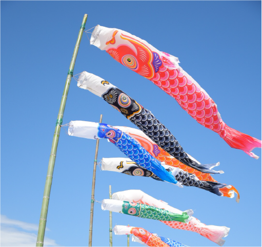

過去作品一覧
- 1.LPデザイン
- 2.コーディング
- 3.撮影・画像編集
- 4.バナー作成
LIFE hair design

ヘアサロンのLPデザインを作成いたしました。コーポレートカラーのピンクを基調に、温かみを感じられるサイトになっています。
鋭意製作中！

製作中です。
people good
PC版
企業とお客様をつなぐ顧客マッチングサイトのLPデザインを作成いたしました。
people good
スマホ版
上記デザインのスマホ版を作成いたしました。
デザインカフェ

いただいたデザインカンプを元にコーディングいたしました。HTML/CSS/jQuery使用
鋭意製作中！
製作中です。
サービス一覧
LPページのサービス一覧箇所のコーディングを担当いたしました。
鋭意製作中！
製作中です。
撮影

茨城県常陸太田市で春頃行われる竜神峡鯉のぼりまつりにて撮影しました。
Photoshop
画像合成
Photoshopにて切り抜き等を駆使し、2枚の画像を1枚に合成。スマホから線路が飛び出してくるような表現にしました。
Photoshop
画像合成
Photoshopにて男性の画像を切り抜き・カットする加工を行いました。
撮影
近所に咲いている向日葵に蝶がとまっていて綺麗でした。
バナー作成

アウトドアイベントのバナーを作成いたしました。なお、背景の画像もPhotoshopで2枚の写真を1枚に合成しています。
バナー作成

美容液のバナー広告をillustratorにて作成いたしました。
バナー用画像

写真をもとにバナーなどに使えるイラストをillustratorにて作成いたしました。
ポスター用画像
バナーとは少し異なりますが、ポスター用画像をillustratorにて作成いたしました。